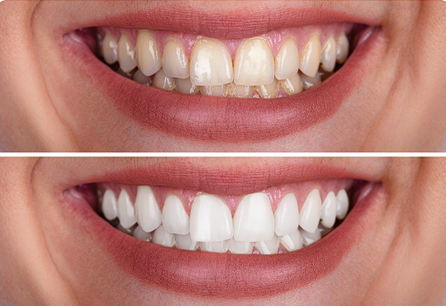

Capítulo 01
As primeiras 48 horas são decisivas
Nas primeiras 48 horas após o clareamento, os dentes ficam mais suscetíveis à absorção de pigmentos. Isso significa que alimentos e bebidas escuros podem interferir no resultado e favorecer manchas indesejadas. Além disso, algumas pessoas podem apresentar sensibilidade temporária nesse período.
O ideal é adotar uma rotina mais cuidadosa, evitando excessos, extremos de temperatura e tudo aquilo que possa provocar desconforto ou alterar a cor recém-tratada. Esse cuidado inicial é um dos fatores mais importantes para manter o efeito estético do procedimento.
- Evite café, vinho tinto, refrigerantes escuros, açaí, molho de tomate, shoyu e outros itens muito pigmentados.
- Não consuma alimentos muito quentes ou muito gelados se houver sensibilidade.
- Mantenha hidratação adequada e prefira refeições simples e leves nos primeiros dias.